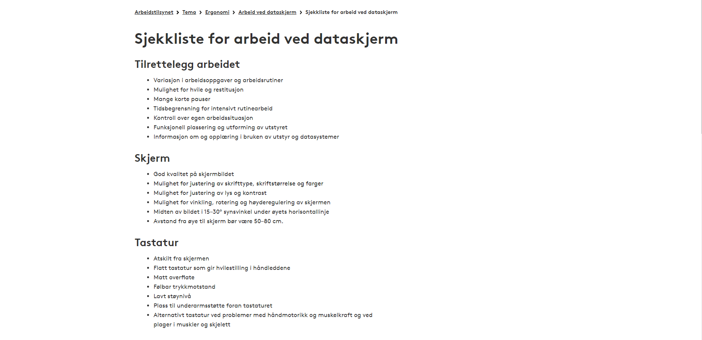

25.02.21
Denne videoen tilhører et prosjekt som gikk ut på å lage en database
som skulle holde informasjon om forskjellige fagkilder. Vi skulle
koble dette til nettsiden vår å gjøre det mulig å
inn info til databasen
fra nettsiden og se informasjonen fra nettsiden

3.02.21
Jeg hadde en oppgave som handlet om å jobbe på et skrivebord. Her er svaret mitt.
27.01.21
Jeg hadde en oppgave som handler om servere med MySQL. Her er svaret mitt.
11.01.21
Denne videoen tilhører et prosjekt som gikk ut på å lage en innlegg
til en videodagbok.
Videoen var en koronadagbok som skulle vise dagen min
og hvordan den er blitt påvirket av korona.
05.01.21
Denne videoen tilhører et prosjekt som gikk ut på å lage en legorobot som skulle
gjøre masse forskjellig, som å kjøre i sirkler, rektangler og mange andre former.

17.12.20
Dette bildet tilhører et tverrfaglig prosjekt. Prosjektet gikk på å lage en charity
stream for å samle inn penger til BCFS som en del av skolen sitt årlige
innsamlingsaksjon. Klassen vår måtte planlegge alt og vi hadde ansvar.
Jeg synes det var veldig gøy og streamen var en stor suksess. Mer info her.
17.11.20
Denne videoen tilhører et prosjekt som gikk ut på å lage en reklamefilm
for linjen jeg går. Vi var delt inn i grupper og laget en reklamefilm sammen.
Mer info her.
04.11.20
Dette bildet tilhører et tverrfaglig prosjekt. Prosjektet gikk ut på å lage en
serie av bilder som fortalte en historie. Det var og et kriteriet
at bildene skal kunne stokkes får å få en
annen historie.
Dette var en av fire bilder tilhørende oppgaven min.
Mer info her.
20.10.20
Dette prosjektet gikk ut på å læer om HMS, gdpr og andre sikkehets foreskrifter.
Jeg hadde om HMS og lagde denne presentasjonen angående dette